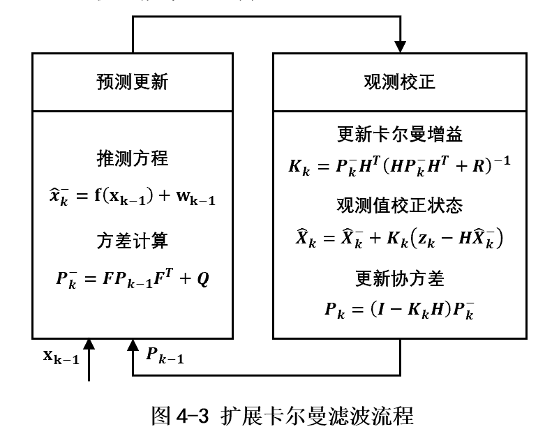
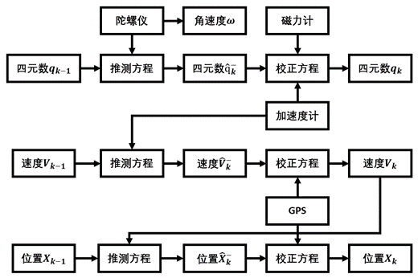

扩展卡尔曼滤波
流程
位置估计、姿态估计由扩展卡尔曼滤波器完成，扩展卡尔曼滤波将非线性的系统模型线性化，在工作点附近进行一阶线性化，忽略其高阶项导数。
系统状态的预测方程：
式中，第一个方程为状态的推算，第二个方程为方差的推算。$x_{k-1}$为上一时刻的状态值，其协方差为$P_{k-1}$；$\hat{x}_k^{-}$为当前时刻的预测值，推算的协方差为$P_k^{-}$；$f(x)$为非线性状态随时间的推算模型，其在$x_{k-1}$处的一阶偏导数为F；$w_{k-1}$为预测过程的噪声，其期望为0，协方差为Q。
测量值的推算方程：
其中，$z_k$为当前时刻的观测量；$h(x)$为状态量到观测量的推算模型，其在$x_k$处一阶偏导数为H；$V_k$为噪声及高阶展开项的误差，其期望为0，协方差为R。
系统测量值的校正方程：
式中，$K_k$为扩展卡尔曼滤波的增益，其物理意义为测量值的可信度；$\hat{X}_k$为校正后的状态量，其校正后的协方差为$P_k$。其中第一第二式即推算增益、校正状态的过程，可通过正态分布的融合或者融合的最大概率推导得出。

在实际应用中，对于姿态角，通常使用高频率的陀螺仪作为姿态推算的依据，而使用加速度计、磁力计、GPS等频率较低的传感器作为姿态的校正输入。对于速度、位置，通常使用加速度计推算，使用GPS、气压计等作为校正输入。这个过程使用扩展卡尔曼滤波得到实时的姿态、位置等数据。
PX4姿态推算
Pixhawk推算的变量一共有24个，分别为：四元数q(地轴到体轴)、地轴系速度v、地轴系的位置p、体轴系角度增量 、体轴系速度增量 、罗差 (磁力计与地磁北极之间的夹角)、地磁角 、地轴NE方向空速 ，其中除了四元数4个量、空速2个量之外，其余变量均为3个。上述过程中的变量均为采样周期内的变化量，而未转化为变化率，这是为了避免噪声放大。
四元数q(地轴到体轴)的推算
式中，$\Delta p_k$为地轴系由k时刻到k+1时刻的四元数变化量，则$\Delta p_k^*$即地轴系由k+1时刻到k时刻的四元数变化量， 为体轴系下的四元数变化量。因为采样时间很短，可认为地轴系坐标没有发生变化，因此
陀螺仪的测得角度变化量$\Delta \theta=\left[\Delta \theta_x, \Delta \theta_y, \Delta \theta_z\right]$，则$\Delta q_k$即表示为绕矢量$\left[\Delta \theta_x, \Delta \theta_y, \Delta \theta_z\right]$旋转$\Delta \theta$角度的四元数，可得
时间足够小，则变化量也足够小，因此$\Delta q_k=\left[1, \Delta \theta_x / 2, \Delta \theta_y / 2, \Delta \theta_z / 2\right]$。
而$q_{k+1}=q_k \otimes \Delta q_k=M\left(\Delta q_k\right) \cdot q_k$(修改矩阵以调换乘法顺序)，因此四元数的推测方程为：
四元数推算模型在$q_k$处的一阶导数$F_{q_k}^{q_{k+1}}$如下：
速度v的推算
上式忽略地球自转的影响，式中$a_m$为加速度计测量值，$g_N$为体轴系的重力加速度。因此速度的推测方程为：
其中，$\Delta v$为从k时刻到k+1时刻加速度计测得的速度增量，$L_{gb}$为体轴系到地轴系的旋转矩阵。速度推算模型在$v_k$处的一阶导数$F_{v_k}^{v_{k+1}}$如下：
位置p的推算
位置推算模型在$p_k$的一阶导数$F_{p_k}^{p_{k+1}}$为：
其余状态的推算方程不再展开叙述。
上述变量的推测方差$P_k^{-}=F P_{k-1} F^T+Q$，在完成单独每个变量的推算之后，则进行每个变量的校正。
PX4姿态矫正
加速度计对四元数的校正
其中，$L_g^b$由四元数$q_k$转化得到，因此可以得到四元数对速度的观测矩阵：
式中：
加速度计校正方程：
GPS对速度和水平位置的校正
状态量$z_{GPS}=\left[v_N, v_E, v_D, p_N,p_E\right]$，因此其$H_{GPS}=1$。因此GPS对三个方向的速度及水平位置的校正为：
其余为磁力计、气压计等对状态的校正，原理与上相同。

推导
状态预测
四元数预测
陀螺仪，采样时间间隔内的角增量(为避免噪声放大，没有将角增量转为角速度)。
$q_{k+1}=\Delta p_k^{\ast} \otimes q_k \otimes \Delta q_k$ ，其中， $\Delta \mathrm{p}_{\mathrm{k}}^{\ast}$ 为 $\Delta p_k$ 的共轭四元数【 $(L_{N_k}^{N_{k+1}})^{\prime} \ast L_{N_k}^{B_k} \ast L_{B_k}^{B_{k+1}}$】
| k时刻 | k+1时刻 | k时刻到k+1时刻 | |
|---|---|---|---|
| 机体轴系 | $B_k$ | $B_{k+1}$ | $\Delta q_k$ |
| NED轴系 | $N_k$ | $N_{k+1}$ | $\Delta p_k$ |
| NED到体轴系 | $q_k$ | $q_{k+1}$ |
采样时间间隔短，NED坐标系变化很慢，$\Delta \mathrm{p}_{\mathrm{k}}^* \approx 1$，因此$q_{k+1}=q_k \otimes \Delta q_k$
其中，$\Delta q_k$为采样时间内的姿态变化四元数，其对应的角度为$\Delta \theta$
由MEMS得到的角度增量：$\Delta \theta=\left[\Delta \theta_{\mathrm{x}}, \Delta \theta_{\mathrm{y}}, \Delta \theta_{\mathrm{z}}\right]=\left[w_x, w_y, w_z\right] \cdot \Delta t$
则$\Delta q_k$表示为绕$\left[\Delta \theta_{\mathrm{x}}, \Delta \theta_{\mathrm{y}}, \Delta \theta_{\mathrm{z}}\right]$旋转$\Delta \theta$的四元数当 $\Delta \theta$ 足够小，可以得到, $\Delta \mathrm{q}_{\mathrm{k}} \approx\left[1, \frac{\Delta \theta_{\mathrm{x}}}{2}, \frac{\Delta \theta_{\mathrm{y}}}{2}, \frac{\Delta \theta_{\mathrm{z}}}{2}\right]$
因此， $q_{k+1}=q_k \otimes \Delta q_k=M\left(\Delta q_k\right) \cdot q_k$，其中
陀螺仪有零偏，进行如下处理
$\Delta \theta_b=\left[\Delta \theta_{\mathrm{bx}}, \Delta \theta_{\mathrm{by}}, \Delta \theta_{\mathrm{bz}}\right]$为陀螺仪从k到k+1时刻角增量的偏差
$\Delta \theta_m=\left[\Delta \theta_{\mathrm{mx}}, \Delta \theta_{\mathrm{my}}, \Delta \theta_{\mathrm{mz}}\right]$为从k到k+1时刻测量得到角增量
$\Delta \theta_n=\left[\Delta \theta_{\mathrm{nx}}, \Delta \theta_{\mathrm{ny}}, \Delta \theta_{\mathrm{nz}}\right]$为从k到k+1时刻测量得到角增量的噪声
则，$\Delta \theta=\left[\Delta \theta_{\mathrm{x}}, \Delta \theta_{\mathrm{y}}, \Delta \theta_{\mathrm{z}}\right]=\left[\Delta \theta_{\mathrm{mx}}-\Delta \theta_{\mathrm{bx}}-\Delta \theta_{\mathrm{nx}}, \Delta \theta_{\mathrm{my}}-\Delta \theta_{\mathrm{by}}-\Delta \theta_{\mathrm{ny}}, \Delta \theta_{\mathrm{mz}}-\Delta \theta_{\mathrm{bz}}-\Delta \theta_{\mathrm{nz}}\right]$
因此，最终的传递方程为：
此时，$q_{k+1}=F q_k$
其对应的协方差传递为：$P_k^{-}=F P_{k-1} F^T+Q$
速度预测
NED坐标中，速度方程为$v_N=L_B^N \cdot a_m+g_N-\omega_{i e} \times\left(\omega_{i e} \times p_N\right)-\left(2 \omega_{i e}+\omega_{e n}\right) \times v_N$
其中，$a_m$为加速度计测量值，$[0,0,g]$为NED的重力加速度
$\omega_{\mathrm{ie}}=[\Omega \cos L, 0,-\Omega \sin L]$为地球自转角速度，$\Omega$地球自转角速度，L为飞行器所在纬度
$p_N$为地球中心到飞行器的位置矢量，$\omega _{en}$为机体相对于地球的圆锥运动在NED坐标系下的表示
$\omega_{\mathrm{en}}=\left[\frac{\mathrm{v}_{\mathrm{E}}}{\mathrm{R}_0+\mathrm{h}}, \frac{-\mathrm{v}_{\mathrm{N}}}{\mathrm{R}_0+h},-\frac{\mathrm{v}_{\mathrm{E}} \tan L}{\mathrm{R}_0+h}\right]$，$R_0$为地球半径，h为高度
地球自转角速度约7.2921e-5rad/s，地球半径约6378km，速度较低时，$\omega _{en}$和$\omega _{ie}$可以忽略不计
因此，$v_N=L_B^N \cdot a_m+g_N$
将速度方程离散化：
$\Delta v$为从k时刻到k+1时刻加速度计测得的速度增量
加速度计有零偏，进行如下处理
$\Delta v_b=\left[\Delta \mathrm{v}_{\mathrm{bx}}, \Delta \mathrm{v}_{\mathrm{by}}, \Delta \mathrm{v}_{\mathrm{bz}}\right]$为加速度计从k到k+1时刻速度增量的偏差
$\Delta v_m=\left[\Delta \mathrm{v}_{\mathrm{mx}}, \Delta \mathrm{v}_{\mathrm{my}}, \Delta \mathrm{v}_{\mathrm{mz}}\right]$为从k到k+1时刻测量得到速度增量的噪声
$\Delta v_n=\left[\Delta \mathrm{v}_{\mathrm{nx}}, \Delta \mathrm{v}_{\mathrm{ny}}, \Delta \mathrm{v}_{\mathrm{nz}}\right]$为从k到k+1时刻测量得到速度增量的噪声
则，$\Delta \mathrm{v}=\left[\Delta \mathrm{v}_{\mathrm{x}}, \Delta \mathrm{v}_{\mathrm{y}}, \Delta \mathrm{v}_{\mathrm{z}}\right]=\left[\Delta \mathrm{v}_{\mathrm{mx}}-\Delta \mathrm{v}_{\mathrm{bx}}-\Delta \mathrm{v}_{\mathrm{nx}}, \Delta \mathrm{v}_{\mathrm{my}}-\Delta \mathrm{v}_{\mathrm{by}}-\Delta \mathrm{v}_{\mathrm{ny}}, \Delta \mathrm{v}_{\mathrm{mz}}-\Delta \mathrm{v}_{\mathrm{bz}}-\Delta \mathrm{v}_{\mathrm{nz}}\right]$
传递方程为：
此时，$v_{k+1}=v_k+L_B^N \cdot \Delta v+g_N \cdot \Delta t$
位置预测
忽略旋转效应等，可以得到：
此时，
可得，
协方差预测补充
速度→四元数：
因此，
其中，
其中，
状态融合
GPS
观测方程：$\mathrm{z}_{\mathrm{GPS}}=H_{G P S} * x+ 误差$
其中，$\mathrm{Z}_{\mathrm{GPS}}=\left[\mathrm{v}_{\mathrm{N}}, \mathrm{v}_{\mathrm{E}}, \mathrm{v}_{\mathrm{D}}, \mathrm{p}_{\mathrm{N}}, \mathrm{p}_{\mathrm{E}}\right]$
更新方程：【带”-“为状态预测值】
【$R_{GPS}$为GPS观测的协方差】
气压计
观测方程：$\mathrm{z}_{\mathrm{baro}}=H_{baro} * x+ 误差$
其中，$\mathrm{z}_{\mathrm{baro}}=h$，$H_{\text {baro }}^{1 * 1}=1$
更新方程：
【$R_{baro}$为气压计观测的协方差】